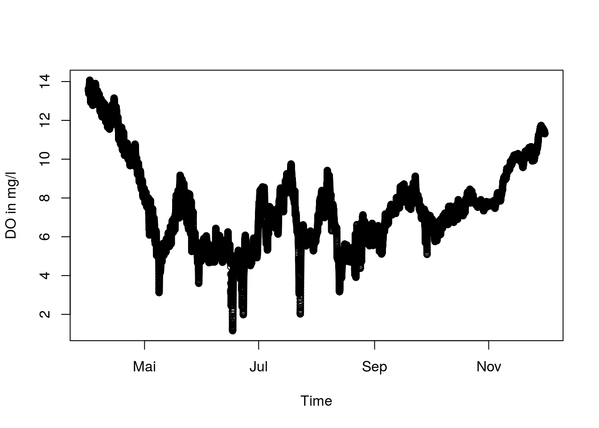
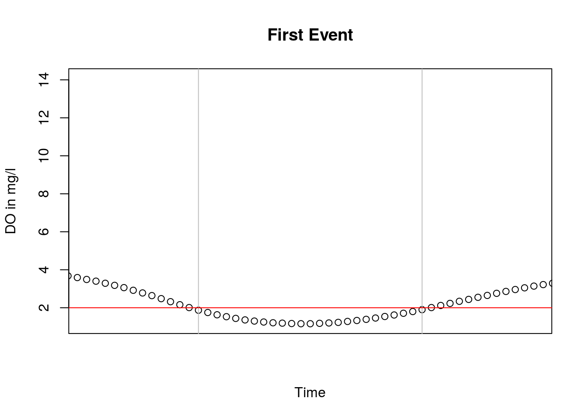

vignettes/tutorial.Rmd
tutorial.Rmd# install.packages("devtools")
devtools::install_github("kwb-r/kwb.resilience", dependencies = TRUE)library("kwb.resilience")Let’s have a look at some example data
head(oxygen)
#> timestamp S2_storage_2020 S3_storage_increase
#> 1 2007-04-01 00:00:00 13.73 13.63
#> 2 2007-04-01 00:15:00 13.71 13.62
#> 3 2007-04-01 00:30:00 13.70 13.60
#> 4 2007-04-01 00:45:00 13.69 13.59
#> 5 2007-04-01 01:00:00 13.67 13.57
#> 6 2007-04-01 01:15:00 13.66 13.56
#> S4_red_Imp_Surface S5_increase_in_DO
#> 1 13.63 13.77
#> 2 13.62 13.75
#> 3 13.60 13.74
#> 4 13.59 13.72
#> 5 13.57 13.71
#> 6 13.56 13.70
plot_dissolved_oxygen_S4 <- function(oxygen, ...) {
plot(
x = oxygen$timestamp,
y = oxygen$S4_red_Imp_Surface,
xlab = "Time",
ylab = "DO in mg/l",
...
)
}
plot_dissolved_oxygen_S4(oxygen)
system.time(Sev.S4 <- resilience.severity(
time_stamp = oxygen$timestamp,
Pt = oxygen$S4_red_Imp_Surface,
Pa = 2,
Pmax = 0
))
#> User System verstrichen
#> 0.092 0.000 0.093
# Use another method of integral calculation (loop -> vector calculation)
system.time(Sev.S4.control <- resilience.severity(
time_stamp = oxygen$timestamp,
Pt = oxygen$S4_red_Imp_Surface,
Pa = 2,
Pmax = 0,
integral_method = 2
))
#> User System verstrichen
#> 0.000 0.000 0.001
# Method 2 should be faster but both methods should return the same!
stopifnot(identical(Sev.S4, Sev.S4.control))
Res0.S4 <- 1 - Sev.S4# Define the acceptable performance
Pa <- 2
events.S4 <- resilience.events(
time_stamp = oxygen$timestamp,
Pt = oxygen$S4_red_Imp_Surface,
Pa = Pa,
Pmax = 0,
evtSepTime = 6 * 60 * 60,
signalWidth = 15 * 60
)
xlim <- kwb.utils::extendLimits(kwb.event::eventToXLim(events.S4[1, ]), 0.5)
plot_dissolved_oxygen_S4(oxygen, xlim = xlim, main = "First Event")
abline(v = unlist(events.S4[1, c("tBeg", "tEnd")]), col = "grey")
abline(h = Pa, col = "red")
resi.summary <- resilience.summary(
time_stamp = oxygen$timestamp,
Pt = oxygen[, setdiff(names(oxygen), "timestamp")],
Pa = 2,
Pmax = 0,
evtSepTime = 6 * 60 * 60,
signalWidth = 15 * 60
)
resi.summary
#> time_series num_events worst_P total_dur total_trec mean_trec_percent
#> 1 1 4 0.45 77400 37800 49.81982
#> 2 2 4 0.46 71100 35100 47.97619
#> 3 3 2 1.16 25200 11700 40.66667
#> 4 4 3 1.09 41400 19800 46.09195
#> Sev Res0
#> 1 0.0014203381 0.9985797
#> 2 0.0011772114 0.9988228
#> 3 0.0003069501 0.9996930
#> 4 0.0004192281 0.9995808